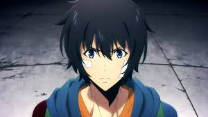
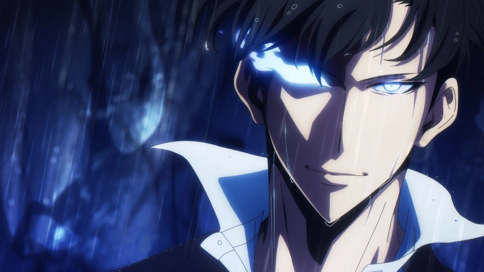

About the Author
Chugong is a South Korean author known for his web novels. Solo Leveling, originally a web novel, gained immense popularity and was later adapted into a webtoon and a light novel.
Reception
Solo Leveling has received positive reviews for its engaging story, well-developed characters, and stunning artwork in its webtoon adaptation. It has garnered a large fanbase both in South Korea and internationally.
Adaptations
Solo Leveling has been adapted into various formats, including a popular webtoon and a light novel. These adaptations have helped introduce the story to a wider audience and have contributed to its success.
Characters
| Character | Description |
|---|---|
| Sung Jin-Woo | The protagonist, known as the weakest hunter who gains the ability to level up. |
| Cha Hae-In | A skilled S-Rank hunter and member of the Hunter's Association. |
| Go Gun-Hee | The chairman of the Korean Hunter's Association. |
Character Development
Solo Leveling features significant character development, particularly for the protagonist, Sung Jin-Woo. As he progresses from the weakest hunter to one of the most powerful, readers witness his growth in strength, confidence, and leadership.
Sung Jin-Woo at the start of the series
Sung Jin-Woo at the end of season 2